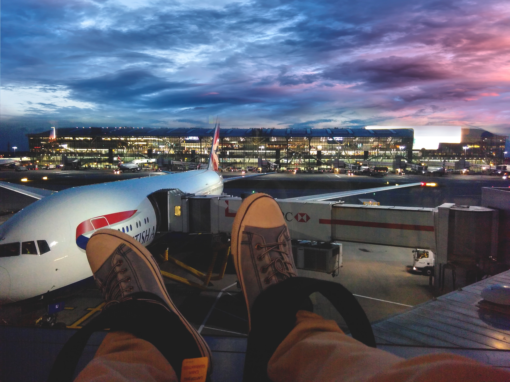
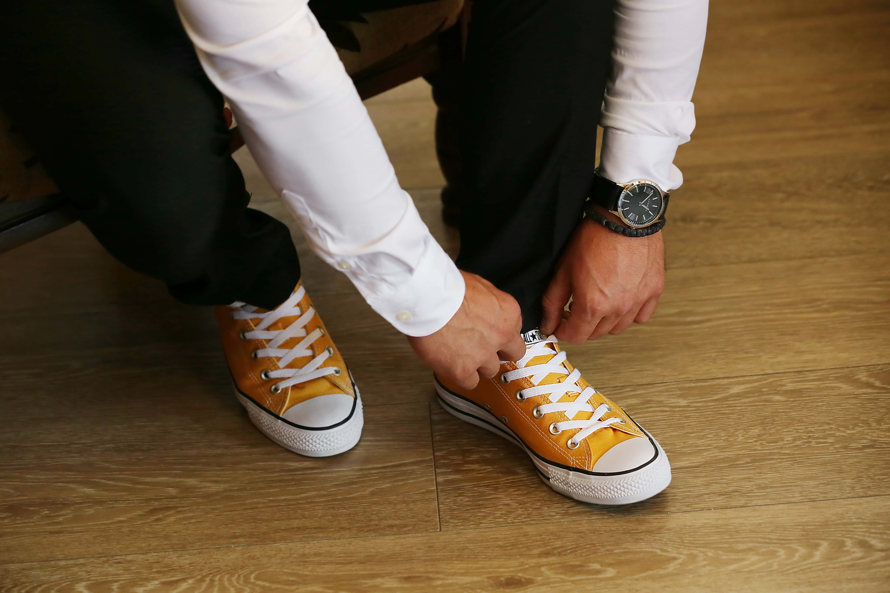
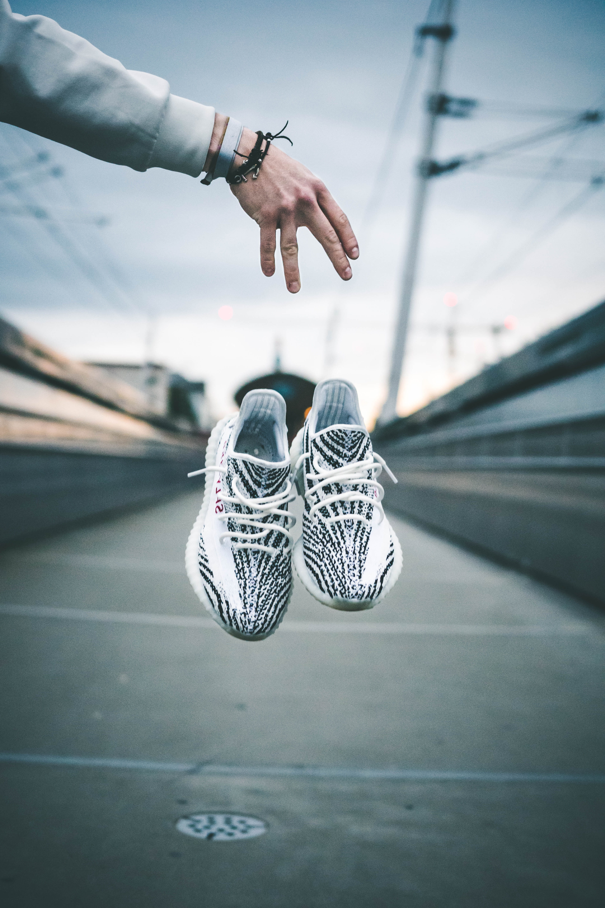

welcom shoes for travelling website
same tips to buy shoes for travelling
When traveling and sightseeing in India, it's best to wear comfortable and breathable shoes, such as lightweight sneakers or walking shoes. Opt for closed-toe shoes to protect your feet from dust and debris, especially in crowded areas. Ensure they have good arch support for long walks, and consider slip-on styles for easy removal when visiting temples or homes where shoes need to be taken off. Finally, choose shoes in neutral colors to blend in with the local culture and customs.

rule of shoes when you are travelling
Comfort is Key: When traveling, choose comfortable shoes that provide support for long walks or extended periods on your feet. Weather Consideration: Pack shoes suitable for the destination's weather; sneakers for sightseeing, sandals for the beach, and waterproof boots for rainy days. Versatility Matters: Opt for versatile shoes that can be worn with multiple outfits to save space in your luggage. Quality Over Quantity: Investing in high-quality, durable shoes can prevent the need for frequent replacements during your travels

best shoes for airport
Slip-On Convenience: Slip-on shoes, like loafers or sneakers, offer the utmost convenience at the airport with easy on-off access during security checks. Sneakers for Comfort: Lightweight sneakers with cushioned insoles provide both comfort and style, making them an excellent choice for navigating the airport. Boots with Zippers: Ankle-length or mid-calf boots with side zippers strike a balance between fashion and functionality, offering support and easy removal. Sandals for Warmth: In warmer climates, comfortable sandals or flip-flops are ideal for a relaxed airport experience, ensuring comfort and breathability.
one day trip for shoes and clothes
Choose casual clothes for your day trip. such as jeans, shorts, or a comfortable dress, depending on the weather and your personal style. Layering: Bring layers like a light jacket or sweater for unexpected weather changes. Adjusting your clothing layers as necessary is a practical approach. Comfortable Footwear: Wear sturdy walking shoes or sneakers with good arch support to keep your feet comfortable throughout the day. Weather Adaptation: Check the weather forecast and bring essentials like sunglasses, a hat, and sunscreen for sunny days or an umbrella and a waterproof jacket for rainy ones. By considering these factors, you'll be well-prepared and comfortable for your day trip adventures
You should bring several pairs of shoes to the vaccination.
The number of pairs of shoes you should take on vacation depends on the destination, activities planned, and the duration of your trip. In general, it's advisable to pack a versatile pair of comfortable walking shoes suitable for exploring, a pair of casual shoes for everyday wear, and a dressier pair if you plan to attend formal events. If you're heading to a beach destination, don't forget your flip-flops or sandals. Ultimately, aim for a maximum of three to four pairs to cover all your needs while keeping your luggage manageable.
The blue button for the top travelling shoes is located here.
sneaker have a fascinating history. The term sneaker comes from the fact that their rubber soles allow wearers to move silently or sneak around. They were initially developed in the late 19th century and gained popularity for their comfort and functionality
buy Nowcopyright © 2023 - all right reseved